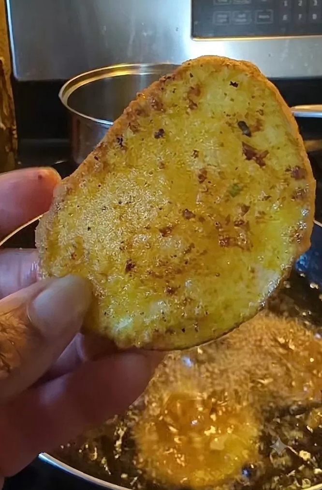

Recipe & Narrative · Road to Kisumu Series
I posted the video like it was any other post. Nothing special in my mind. Wrapped up my day, went to bed.
I woke up around 2am like I usually do and my comment section was going crazy. Unknowingly, I had stepped right into a full-on debate in Kenya about what actually counts as real Bhajia.
So I'm scrolling… and yeah, I'm getting dragged. "This mzungu doesn't know our food." "He's trying to steal culture." "Why is he even cooking our food?" It got rough.
But then I started noticing something else, people stepping in. People defending me. And honestly, that moment just deepened my love for the region even more.
What really happened was simple, I took what Nairobi commonly calls Bhajia and labeled it broadly. And that hit a nerve. People felt like I, as an outsider, was trying to define something that's deeply theirs.
But in that same tension came the real clarity.
One of my followers, Kenyan, born and raised, jumped in and said, "This is an outsider. Even we don't agree on what the proper version is, so how can we expect him to know?"
That right there shifted everything for me. I smiled. Not because I was "right," but because I understood something deeper. This is exactly why telling these food stories matters. And more importantly, getting them right matters.
So what you're about to see isn't the Bhajia. It's what I learned as Bhajia. What I now understand is the Nairobi version of Bhajia, what many coastal Kenyans would call Viazi Karai. And depending on where you are in the country, the name and even the identity of the dish can change.
That being said — this recipe is Nairobian Bhajia.
Slice your potatoes thin. Get them into salted water while you prep everything else — this pulls out the starch and keeps them from browning.
Mince your garlic. Chop your cilantro.
In a bowl, combine flour with turmeric, onion powder, garlic salt, and curry powder. Add the minced garlic and chopped cilantro. Mix well until you have a thick, fragrant batter. The turmeric will turn it that deep golden yellow — that's how you know it's right.
In a deep pan or pot, add at least two inches of oil and bring to frying temperature. Pull your potato slices from the water, shake off the excess, dip them in the batter, and fry in batches until golden brown and crispy.
Don't rush the fry. The crust is the whole point.
Drain on paper towels and serve immediately with ketchup or your favorite dipping sauce.
I'm a San Francisco Bay Area chef building a life in Kisumu. I learned this recipe from a TikTok video, got dragged in a comment section, got defended by strangers, and walked away with a deeper understanding of a food and a culture I'm still learning every day.
That's the work. Not just cooking the dish — but understanding where it comes from, who it belongs to, and what it means to the people who grew up eating it.
The comment section has since gone quiet. But I kept cooking.
If you make this, post it. Tag me. And whatever you do — don't call it just Bhajia.
— Chef Dumela